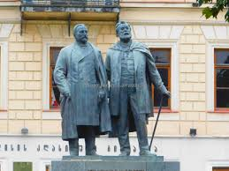

WWW.SCHOOLS.COM |
|
|---|---|
| მთავარი | თბილისის კლასიკური გიმნაზია (უწინ თბილისის პირველი გიმნაზია და თბილისის პირველი საჯარო სკოლა), დაარსდა 1830 წელს ადრე არსებული (1804-იდან) კეთილშობილთა სასწავლებლის ბაზაზე. 20 წლის განმავლობაში ეს გიმნაზია იყო ვაჟთა ერთადერთი საერო საშუალო სასწავლებელი საქართველოში. მასთან არსებობდა პანსიონიც.  |
| ისტორია | |
| სკოლა | |
| კათედრები | |
| აქტივობა | |
| გალერეა | |
| კონტაქტი | |
| ყველა უფლება დაცულია.2013 წელი |